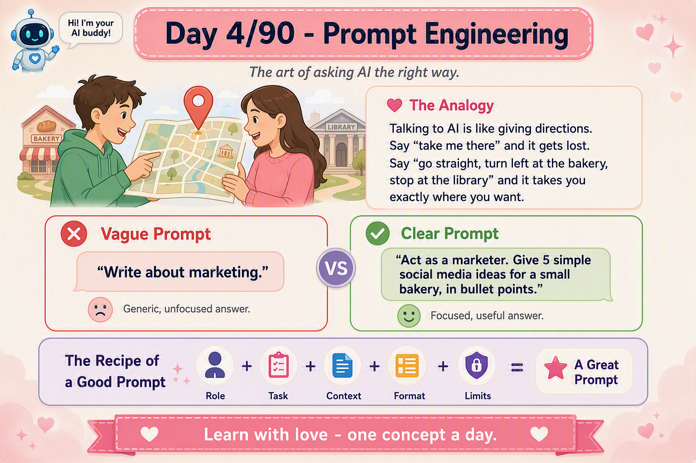

📜 The 30-second brief
Prompt engineering is the craft of shaping the input to a language model so the output is accurate, relevant, and usable. You are not editing the model — you cannot change its weights. You are steering it. The prompt is the steering wheel, and words are the only control you have.
Here is the mindset shift most people never make: when you write a prompt, you are programming — in plain English. There is no compiler and no syntax error message, so a bad prompt fails silently by handing you a mediocre answer instead of an error. Learning to prompt well is learning to debug that silence.
💌 A fresh analogy: the brilliant new intern
Forget maps for a moment. Picture a brand-new intern on their first morning. This intern has read almost the entire internet — astonishingly well-read, fast, and eager. But they have never met you, know nothing about your company or project, and will never remember this conversation tomorrow.
If you walk past and mumble "handle the report", they produce something — confident, polished, possibly completely wrong — because they would rather guess than admit they lack context. But say "here's last month's sales file, the audience is the finance team, I need a one-page summary with three risks, by lunch", and that same intern becomes brilliant.
The lesson: the AI's intelligence is fixed and enormous. The only variable you control is how well you brief the intern. Prompt engineering is onboarding your intern, every time you speak.
⚙️ What actually happens when you hit enter
To prompt like a professional, picture the machinery (this ties back to Note 2 — Tokens, and Note 3 — the Context Window):
- Your prompt is broken into tokens — small chunks of text, not whole words.
- The model reads all tokens at once and weighs how each relates to the others (this is "attention").
- It predicts the next token — not the "true" answer, but the most statistically likely continuation given your words.
- It repeats, one token at a time, until the answer is complete.
This single fact explains almost every prompting rule you will ever learn: the model is a prediction engine, not a knowledge database. It is always answering "given this text, what usually comes next?" Your job is to make the right answer also the most likely one.
🧩 Beyond the recipe: prompting frameworks
The image gives you the starter recipe (Role + Task + Context + Format + Limits). Here are the named frameworks professionals actually reach for:
| Framework | Stands for | Best for |
|---|---|---|
| RTF | Role · Task · Format | Quick everyday asks |
| RISEN | Role · Instruction · Steps · End-goal · Narrowing | Complex, multi-step tasks |
| CRISPE | Capacity · Request · Insight · Specifics · Personality · Experiment | Creative & exploratory work |
| CO-STAR | Context · Objective · Style · Tone · Audience · Response-format | Polished, audience-facing writing |
Don't memorise all of them. Memorise one (RTF for speed, CO-STAR for depth) and understand they are the same idea: remove the model's need to guess.
🔧 Advanced tips & tricks (the ones that move the needle)
- Use delimiters. Wrap input in triple quotes, XML tags, or
###markers so the model never confuses your instructions with the text to work on. - Few-shot beats explaining. Showing 1–3 input→output examples teaches the pattern faster than a paragraph of description ever will.
- Ask for reasoning: "think step by step." For logic or multi-part tasks this measurably improves accuracy (chain-of-thought — our Note 9).
- Prime the output. End your prompt with the start of the answer — e.g.
Return JSON only: {— and the model falls into line. - Prefer positive instructions. "Write short sentences" works better than "don't write long sentences." Models steer toward what you describe, not away from it.
- Split big jobs (prompt chaining). One prompt to extract, another to analyse, a third to format. Small clear steps beat one giant messy prompt.
- Make it self-critique. "Review your answer, list any errors, then give the corrected version." The model genuinely catches its own mistakes.
- Pair prompt with temperature. Low for facts and code, higher for brainstorming (that dial is next — Note 5).
🏭 Real-world example: from noise to a usable incident summary
A different scene — one from an on-call engineer's night. Same AI, two very different prompts:
| ❌ Weak prompt | ✅ Engineered prompt |
|---|---|
| "Summarise this log." | "Act as a senior SRE. Below are 200 log lines between triple quotes. Produce: (1) a 2-line plain-English summary, (2) the likely root cause, (3) the 3 most relevant error timestamps. If evidence is insufficient, say so — do not guess." |
| Output: a vague paragraph restating the logs. | Output: a structured, decision-ready incident note you can paste straight into the ticket. |
Notice the four upgrades: a role, a clear output structure, explicit delimiters, and a guardrail against hallucination ("if insufficient, say so"). That last clause is what separates a hobbyist prompt from a production one.
🔒 Things no textbook tells you (off-the-record notes)
- The model has no memory between calls. Every request starts blank; the "memory" you feel is just previous text being resent. Context is not remembered — it is re-fed.
- Ambiguity defaults to average. When you are vague, the model fills the gap with the statistically most common answer — which is why vague prompts feel bland. Specificity buys originality.
- The opening words carry the most weight. Lead with the role and the goal, not with pleasantries.
- The model mirrors you. Sloppy prompts get sloppy answers; precise prompts get precise ones. Quality is contagious in both directions.
- "Please" doesn't help — structure does. It is clarity and specificity, not manners, that change the output.
- It will confidently hallucinate to avoid a gap. Always give it explicit permission to say "I don't know."
- Order matters (primacy & recency). Instructions at the very start and very end of a long prompt get more weight. Put your most important rule last.
- It cannot reliably count or do exact math in its head — it predicts digits like it predicts words. For precision, ask it to reason step by step or use a tool.
⚠️ Common pitfalls & anti-patterns
- The kitchen-sink prompt — cramming ten unrelated asks into one. Split them.
- Buried instructions — the real task hidden in paragraph four. Lead with it.
- Undefined success — never saying what "good" looks like, then being disappointed.
- No format specified — then complaining the answer isn't a table.
- Assuming shared context — referring to "the project" the model has never seen.
🎓 Quick self-test (exam-style)
- Why do vague prompts produce generic answers?
Because the model fills ambiguity with the statistically most common continuation. - What are the five levers of a strong prompt?
Role, Task, Context, Format, Limits. - Why give the model permission to say "I don't know"?
To suppress confident hallucination when evidence is insufficient. - What is few-shot prompting?
Showing the model a few input→output examples so it infers the pattern. - Why use delimiters?
To cleanly separate your instructions from the content to be processed. - Does the model remember your last chat?
No — prior context is re-sent as text, not remembered.
📚 Key terms to carry forward
- Prompt — the full input you give the model.
- Zero-shot — asking with no examples.
- Few-shot — asking with a few examples included.
- Chain-of-thought — prompting the model to reason step by step.
- Delimiter — a marker (
```,###, <tags>) separating sections. - System prompt — the hidden instruction that sets the model's overall behaviour (our Note 7).
⚡ 60-second flashcard (last look before the exam)
| Define it in one breath | Shaping the input so the output is accurate, relevant, usable — programming in plain English. |
| The recipe (memorise) | R-T-C-F-L → Role · Task · Context · Format · Limits. |
| One-line mental model | The AI is a brilliant intern with no memory — brief it fully, every time. |
| Why vague fails | Ambiguity defaults to the statistically average answer. |
| Power moves | Delimiters · few-shot examples · "think step by step" · prime the output · self-critique. |
| Anti-hallucination clause | "If evidence is insufficient, say so — do not guess." |
| Positive > negative | "Write short sentences" beats "don't write long ones." |
| Order trick | Most important rule goes last (recency wins in long prompts). |
| Reusable template | "Act as [role]. [Task]. Context: [background]. Output as [format]. Avoid [limits]." |
| Trap to avoid | The kitchen-sink prompt — split big jobs into a chain of small ones. |
🖼️ Today's cheat sheet
The same image shared on the LinkedIn post for Note 4.

✨ Tomorrow's spark
You now know how to tell AI what to do. Note 5 — Temperature — is the dial that decides how boldly it answers: from safe and predictable to wild and inventive.